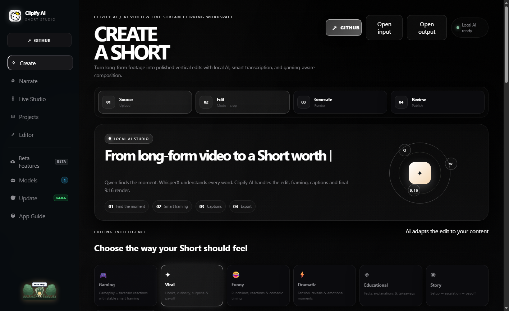
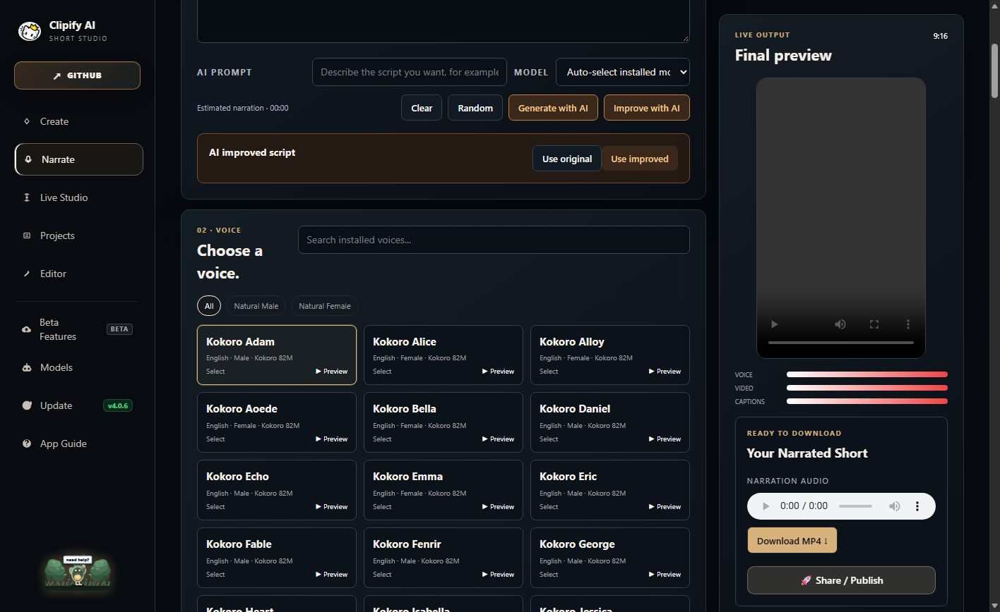

Desktop Studio Tour
A unified desktop suite designed for rapid short-form content creation.

AI Clipping Dashboard
Import YouTube links or local video files, select local Ollama models, choose caption fonts, and toggle 2-panel split screen mode.

Post-Render Editor & Branding
Full 9:16 vertical viewport with real-time video playback, draggable logo overlays, transparency slider, and chroma-key background removal.

Narrate Studio
Draft or generate viral story scripts with local LLMs, choose neural Kokoro or Windows SAPI voices with instant sub-2ms audio previews, and render faceless shorts.

2-Panel Split Screen
Automatically compose dual-speaker conversations or pair reaction/commentary video on top with engaging gameplay below.

Interactive Game Installer
Play a built-in runner mini-game with 6 seasonal weather transitions while observing live pip installation terminal telemetry.

Project & Shorts Library
Organize, preview, rename, and export finished vertical shorts with one-click direct routing into the editor.